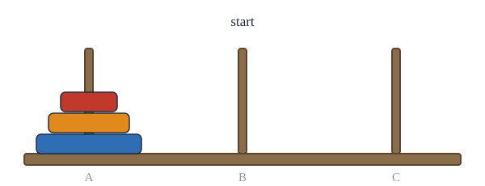
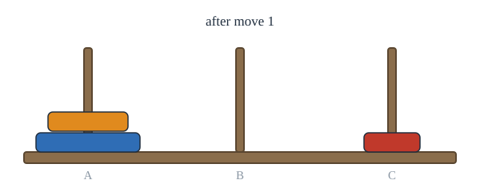
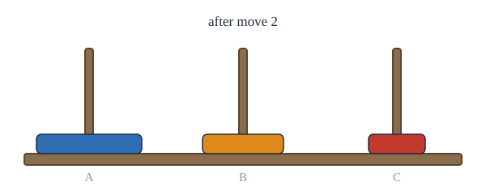
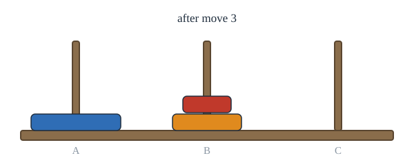
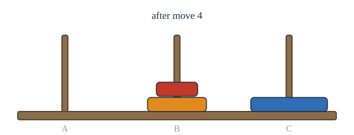
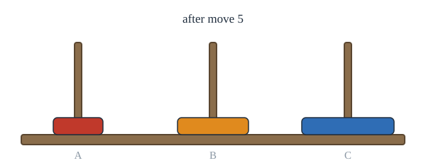
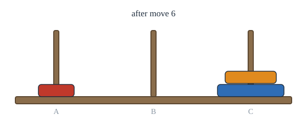
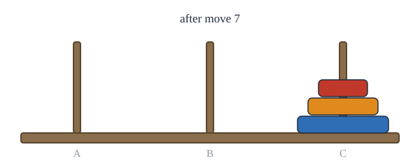
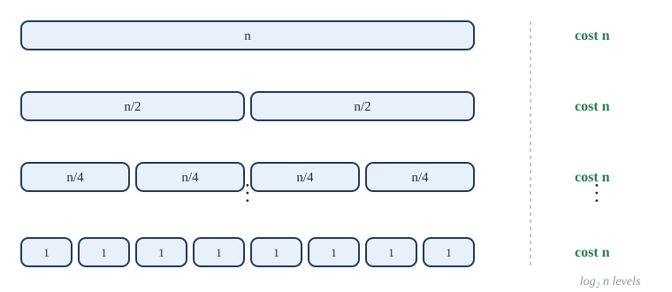

Chapter 9: Recurrence Relations and Generating Functions¶
How sequences grow, and how to find their formulas
Learning outcomes
After this chapter you should be able to:
- model counting problems and algorithms with recurrence relations and initial conditions;
- solve simple recurrences by iteration, and prove the result by induction;
- solve linear homogeneous recurrences with constant coefficients by the characteristic equation, with distinct or repeated roots;
- find particular solutions of linear non-homogeneous recurrences;
- analyse divide-and-conquer algorithms with recurrences and the master theorem;
- use generating functions to count and to solve recurrences.
9.1 Recurrence relations as models¶
A recurrence relation for a sequence \(a_0, a_1, a_2, \dots\) expresses \(a_n\) in terms of earlier terms. Together with enough initial conditions (the first few terms), it determines the whole sequence, just as the recursive definitions of Section 6.4 do. A solution is a formula for \(a_n\) in terms of \(n\) alone.
Many problems are easiest to describe by a recurrence: how the problem of size \(n\) is built from smaller ones. Solving the recurrence then gives the answer.
Example 9.1: Compound interest
Problem. A deposit of 10,000 rupees earns 7% interest a year, compounded yearly. How much is in the account after \(n\) years?
Solution. Let \(P_n\) be the amount after \(n\) years. Then \(P_0 = 10000\) and \(P_n = P_{n-1} + 0.07P_{n-1} = 1.07P_{n-1}\). Iterating, \(P_n = 1.07^n \cdot 10000\). After 10 years that is about 19,672 rupees.
Example 9.2: The Tower of Hanoi
Problem. Three pegs; \(n\) discs of different sizes on the first, largest at the bottom. A move takes the top disc from one peg and puts it on another, never on a smaller disc. How many moves are needed to move the whole tower to the third peg?
Solution. Let \(H_n\) be the least number of moves for \(n\) discs. To move the largest disc at all, the \(n - 1\) smaller discs must first be stacked on the middle peg, which takes \(H_{n-1}\) moves. Then the largest disc moves (1 move), and the \(n - 1\) smaller discs are moved on top of it (\(H_{n-1}\) moves). So
The values are \(1, 3, 7, 15, 31, \dots\), which suggests \(H_n = 2^n - 1\); Section 9.2 proves it. Figure 9.1 steps through the 7 moves for three discs.

1The start: three discs on the left peg.

2Move 1: the small disc to the right peg.

3Move 2: the middle disc to the middle peg.

4Move 3: the small disc onto the middle disc. The two smaller discs are now on the middle peg.

5Move 4: the large disc to the right peg.

6Move 5: the small disc to the left peg.

7Move 6: the middle disc onto the large disc.

8Move 7: the small disc on top. The tower has moved in 2 to the power 3 minus 1 = 7 moves.
Example 9.3: Bit strings without two consecutive zeros
Problem. Find a recurrence for \(a_n\), the number of bit strings of length \(n\) with no two consecutive 0s.
Solution. Split the valid strings of length \(n \ge 3\) by their last bit. Those ending in 1 are a valid string of length \(n - 1\) followed by 1: \(a_{n-1}\) of them. Those ending in 0 must end in 10 (two 0s are forbidden), and are a valid string of length \(n - 2\) followed by 10: \(a_{n-2}\) of them. So
This is the Fibonacci recurrence, shifted: \(a_n = f_{n+2}\).
9.2 Solving by iteration¶
The most direct method is to unwind the recurrence until a pattern appears, then prove the pattern by induction.
Example 9.4: Solving the Tower of Hanoi recurrence
Problem. Solve \(H_n = 2H_{n-1} + 1\) with \(H_1 = 1\).
Solution. Iterate:
by the geometric sum (Theorem 4.5). Proof by induction: \(H_1 = 1 = 2^1 - 1\), and if \(H_{k} = 2^{k} - 1\) then \(H_{k+1} = 2(2^{k} - 1) + 1 = 2^{k+1} - 1\). \(\blacksquare\)
With 64 discs, \(2^{64} - 1 \approx 1.8 \times 10^{19}\) moves: at one move a second, more than 500 billion years.
Iteration works well for first-order recurrences (those involving only \(a_{n-1}\)). For others we need a theory.
9.3 Linear homogeneous recurrences¶
Definition
A linear homogeneous recurrence relation of degree \(k\) with constant coefficients has the form
with real constants \(c_1, \dots, c_k\) and \(c_k \ne 0\). Linear: the earlier terms appear to the first power, not multiplied together. Homogeneous: every term involves some \(a_j\), with no added function of \(n\). Degree \(k\): \(a_n\) depends on the previous \(k\) terms, so \(k\) initial conditions determine the sequence.
The Fibonacci recurrence \(f_n = f_{n-1} + f_{n-2}\) is linear homogeneous of degree 2. The Hanoi recurrence \(H_n = 2H_{n-1} + 1\) is not homogeneous, because of the \(+1\), and \(a_n = a_{n-1}^2\) is not linear.
The key idea: look for solutions of the form \(a_n = r^n\). Substituting into the recurrence and dividing by \(r^{n-k}\) gives
the characteristic equation, whose roots are the characteristic roots. So \(r^n\) is a solution exactly when \(r\) is a characteristic root. And because the recurrence is linear and homogeneous, any combination \(\alpha_1 r_1^n + \alpha_2 r_2^n\) of solutions is again a solution.
Theorem 9.1 (distinct roots, degree 2)
Suppose \(r^2 - c_1 r - c_2 = 0\) has two distinct roots \(r_1\) and \(r_2\). Then a sequence satisfies \(a_n = c_1 a_{n-1} + c_2 a_{n-2}\) if and only if
for some constants \(\alpha_1, \alpha_2\), which are determined by the initial conditions \(a_0\) and \(a_1\).
Proof. Every such sequence is a solution: since \(r_i^2 = c_1 r_i + c_2\), we have \(c_1 r_i^{n-1} + c_2 r_i^{n-2} = r_i^{n-2}(c_1 r_i + c_2) = r_i^n\), and adding \(\alpha_1\) times this for \(r_1\) to \(\alpha_2\) times it for \(r_2\) shows \(\alpha_1 r_1^n + \alpha_2 r_2^n\) satisfies the recurrence.
Every solution has this form: given a solution \(a_n\), choose \(\alpha_1, \alpha_2\) with \(\alpha_1 + \alpha_2 = a_0\) and \(\alpha_1 r_1 + \alpha_2 r_2 = a_1\). This linear system has the unique solution \(\alpha_2 = (a_1 - a_0 r_1)/(r_2 - r_1)\), \(\alpha_1 = a_0 - \alpha_2\), because \(r_1 \ne r_2\). Then \(a_n\) and \(\alpha_1 r_1^n + \alpha_2 r_2^n\) are two solutions of the recurrence with the same two initial terms, and a degree-2 recurrence determines every later term from the two before it, so (by strong induction) they agree for all \(n\). \(\blacksquare\)
Example 9.5: Distinct roots
Problem. Solve \(a_n = 5a_{n-1} - 6a_{n-2}\) with \(a_0 = 1\), \(a_1 = 4\).
Solution. The characteristic equation \(r^2 - 5r + 6 = 0\) factors as \((r - 2)(r - 3) = 0\), with roots 2 and 3. So \(a_n = \alpha_1 2^n + \alpha_2 3^n\). The initial conditions give \(\alpha_1 + \alpha_2 = 1\) and \(2\alpha_1 + 3\alpha_2 = 4\), so \(\alpha_2 = 2\) and \(\alpha_1 = -1\):
Check: \(a_2 = 5 \cdot 4 - 6 \cdot 1 = 14\), and \(2 \cdot 9 - 4 = 14\).
A short program can check such a solution against the recurrence for many terms; this does not prove it, but it catches arithmetic slips.
def iterate(a0, a1, n):
seq = [a0, a1]
while len(seq) <= n:
seq.append(5 * seq[-1] - 6 * seq[-2])
return seq
seq = iterate(1, 4, 10)
print(seq)
print(all(seq[n] == 2 * 3**n - 2**n for n in range(11)))
[1, 4, 14, 46, 146, 454, 1394, 4246, 12866, 38854, 117074]
True
Example 9.6: A formula for the Fibonacci numbers
Problem. Solve \(f_n = f_{n-1} + f_{n-2}\) with \(f_0 = 0\), \(f_1 = 1\).
Solution. The characteristic equation \(r^2 - r - 1 = 0\) has roots \(\alpha = \frac{1 + \sqrt{5}}{2}\) and \(\beta = \frac{1 - \sqrt{5}}{2}\). So \(f_n = \alpha_1\alpha^n + \alpha_2\beta^n\), with \(\alpha_1 + \alpha_2 = 0\) and \(\alpha_1\alpha + \alpha_2\beta = 1\). Then \(\alpha_1(\alpha - \beta) = 1\), and \(\alpha - \beta = \sqrt{5}\), so \(\alpha_1 = 1/\sqrt{5} = -\alpha_2\):
This is Binet's formula. Remarkably, the irrational numbers combine to give an integer for every \(n\). Since \(\lvert \beta \rvert < 1\), the second term is tiny, and \(f_n\) is the integer nearest to \(\alpha^n/\sqrt{5}\): the Fibonacci numbers grow like powers of the golden ratio \(\alpha \approx 1.618\).
Repeated roots¶
If the characteristic equation has a repeated root, \(r^n\) gives only one solution, and a second is needed.
Theorem 9.2 (a repeated root, degree 2)
If \(r^2 - c_1 r - c_2 = 0\) has a single repeated root \(r_0\), then the solutions of \(a_n = c_1 a_{n-1} + c_2 a_{n-2}\) are exactly
Proof sketch. A repeated root means \(r^2 - c_1 r - c_2 = (r - r_0)^2\), so \(c_1 = 2r_0\) and \(c_2 = -r_0^2\). Check that \(n r_0^n\) is a solution: \(c_1 (n-1) r_0^{n-1} + c_2 (n-2) r_0^{n-2} = 2(n-1) r_0^n - (n-2) r_0^n = n r_0^n\). The rest of the argument (fitting \(\alpha_1, \alpha_2\) to the initial conditions) is as in Theorem 9.1. \(\blacksquare\)
Example 9.7: A repeated root
Problem. Solve \(a_n = 6a_{n-1} - 9a_{n-2}\) with \(a_0 = 1\), \(a_1 = 6\).
Solution. \(r^2 - 6r + 9 = (r - 3)^2\), a double root at 3. So \(a_n = (\alpha_1 + \alpha_2 n)3^n\). From \(a_0 = 1\), \(\alpha_1 = 1\); from \(a_1 = 6\), \(3(1 + \alpha_2) = 6\), so \(\alpha_2 = 1\). Hence \(a_n = (n + 1)3^n\). Check: \(a_2 = 36 - 9 = 27 = 3 \cdot 9\).
The same ideas extend to any degree \(k\): a root \(r\) of multiplicity \(m\) contributes the terms \((\alpha_0 + \alpha_1 n + \dots + \alpha_{m-1}n^{m-1})r^n\).
9.4 Non-homogeneous recurrences¶
A linear non-homogeneous recurrence has the form
where \(F(n)\) is a function of \(n\), not identically zero. Dropping \(F(n)\) gives the associated homogeneous recurrence.
Theorem 9.3
If \(p_n\) is one particular solution of the non-homogeneous recurrence, then every solution has the form \(a_n = p_n + h_n\), where \(h_n\) is a solution of the associated homogeneous recurrence.
Proof. If \(a_n\) is any solution, subtracting the equations for \(a_n\) and \(p_n\) shows that \(a_n - p_n\) satisfies the homogeneous recurrence (the \(F(n)\) cancels). Conversely, \(p_n + h_n\) is a solution because adding the two equations gives back the non-homogeneous one. \(\blacksquare\)
So the method is: (1) solve the homogeneous part; (2) find one particular solution, by guessing a form like \(F(n)\); (3) add them and fit the constants to the initial conditions, after adding.
| \(F(n)\) | Try \(p_n =\) |
|---|---|
| a constant \(c\) | a constant \(A\) |
| \(cn\) or \(cn + d\) | \(An + B\) |
| \(cn^2\) | \(An^2 + Bn + C\) |
| \(c \cdot s^n\), where \(s\) is not a characteristic root | \(A s^n\) |
| \(c \cdot s^n\), where \(s\) is a root of multiplicity \(m\) | \(A n^m s^n\) |
Table 9.1. Forms to try for a particular solution.
Example 9.8: A non-homogeneous recurrence
Problem. Solve \(a_n = 2a_{n-1} + n\) with \(a_0 = 1\).
Solution. Homogeneous part: \(a_n = 2a_{n-1}\) has solutions \(\alpha 2^n\). Particular solution: try \(p_n = An + B\). Substituting: \(An + B = 2(A(n-1) + B) + n = (2A + 1)n + (2B - 2A)\). Comparing coefficients of \(n\): \(A = 2A + 1\), so \(A = -1\). Comparing constants: \(B = 2B - 2A\), so \(B = 2A = -2\). Hence \(p_n = -n - 2\). General solution: \(a_n = \alpha 2^n - n - 2\). Initial condition: \(a_0 = \alpha - 2 = 1\), so \(\alpha = 3\):
Check: \(a_1 = 2 + 1 = 3\) and \(6 - 1 - 2 = 3\); \(a_2 = 6 + 2 = 8\) and \(12 - 2 - 2 = 8\).
Fit the constants last
The initial conditions apply to the complete solution \(p_n + h_n\), not to \(h_n\) alone. Fitting them to the homogeneous part before adding \(p_n\) gives the wrong constants.
9.5 Divide-and-conquer recurrences¶
A divide-and-conquer algorithm splits a problem of size \(n\) into \(a\) subproblems of size \(n/b\), solves them recursively, and combines the answers with extra work \(g(n)\). Its running time satisfies
- Binary search (Section 6.5) makes one comparison and recurses on half the list: \(f(n) = f(n/2) + 1\).
- Merge sort sorts each half recursively and merges the two sorted halves with at most \(n - 1\) comparisons: \(f(n) = 2f(n/2) + n\), roughly.
For \(n = 2^k\) these can be solved by iteration. For binary search, \(f(2^k) = f(2^{k-1}) + 1 = \dots = f(1) + k\), so \(f(n) = f(1) + \log_2 n\). For merge sort with \(f(1) = 0\), dividing \(f(2^k) = 2f(2^{k-1}) + 2^k\) by \(2^k\) gives \(f(2^k)/2^k = f(2^{k-1})/2^{k-1} + 1\), so \(f(2^k)/2^k = k\) and
Figure 9.2 shows where this comes from: the recursion has \(\log_2 n\) levels, and the merging at each level costs \(n\) in total.

The general pattern is captured by the following theorem, stated here without proof. It uses big-O notation: \(f(n)\) is \(O(h(n))\) if \(f(n) \le C\,h(n)\) for some constant \(C\) and all large enough \(n\).
Theorem 9.4 (the master theorem)
Let \(f\) be an increasing function with \(f(n) = a\,f(n/b) + c\,n^d\) whenever \(n\) is a power of \(b\), where \(a \ge 1\), \(b > 1\) is an integer, \(c > 0\) and \(d \ge 0\). Then
The three cases compare the work done at the top of the recursion (\(n^d\)) with the number of leaves at the bottom (\(n^{\log_b a}\)). For binary search, \(a = 1\), \(b = 2\), \(d = 0\): \(a = b^d\), so \(O(\log n)\). For merge sort, \(a = 2\), \(b = 2\), \(d = 1\): \(a = b^d\), so \(O(n \log n)\). Karatsuba's method multiplies two \(n\)-digit numbers with three half-size multiplications instead of four, \(f(n) = 3f(n/2) + cn\): \(a = 3 > 2 = b^d\), so \(O(n^{\log_2 3}) \approx O(n^{1.585})\), faster than the \(O(n^2)\) of school multiplication.
9.6 Generating functions¶
A generating function packs an entire sequence into a single object.
Definition: generating function
The generating function of the sequence \(a_0, a_1, a_2, \dots\) is the power series
We treat \(G(x)\) as a formal object: \(x\) is a placeholder whose powers hold the terms of the sequence in order, and we do not worry about convergence. Adding or multiplying generating functions, as one would polynomials, gives the generating functions of new sequences.
The most important example is the geometric series:
which you can check by multiplying out \((1 - x)(1 + x + x^2 + \dots) = 1\). Replacing \(x\) by \(ax\), differentiating, and similar manipulations give Table 9.2.
| Sequence \(a_n\) | Generating function |
|---|---|
| \(1, 1, 1, \dots\) | \(\dfrac{1}{1 - x}\) |
| \(a^n\) | \(\dfrac{1}{1 - ax}\) |
| \(n + 1\) | \(\dfrac{1}{(1 - x)^2}\) |
| \(\dbinom{n + k - 1}{k - 1}\) | \(\dfrac{1}{(1 - x)^k}\) |
| \(\dbinom{m}{n}\) (zero for \(n > m\)) | \((1 + x)^m\) |
| \(1\) for \(n \le m\), then \(0\) | \(\dfrac{1 - x^{m+1}}{1 - x} = 1 + x + \dots + x^m\) |
Table 9.2. Some generating functions.
The product of generating functions has a counting meaning. The coefficient of \(x^n\) in \(A(x)B(x)\) is \(\sum_{k=0}^{n} a_k b_{n-k}\): the sum over all ways of splitting \(n\) into a part \(k\) counted by \(A\) and a part \(n - k\) counted by \(B\). So generating functions turn "choose this, then that" into multiplication.
Example 9.9: Counting with a generating function
Problem. In how many ways can 8 identical sweets be shared among 3 children so that each gets at least 2 and at most 4?
Solution. Each child's share is described by \(x^2 + x^3 + x^4\): the exponent is the number of sweets. The number of ways is the coefficient of \(x^8\) in
So we need the coefficient of \(x^2\) in \((1 + x + x^2)^3 = 1 + 3x + 6x^2 + 7x^3 + 6x^4 + 3x^5 + x^6\), which is 6. (The six ways: \((2,2,4)\), \((2,4,2)\), \((4,2,2)\), \((2,3,3)\), \((3,2,3)\), \((3,3,2)\).)
Example 9.10: Stars and bars again
Problem. Use generating functions to count the solutions of \(x_1 + \dots + x_k = n\) in natural numbers.
Solution. Each variable contributes \(1 + x + x^2 + \dots = 1/(1-x)\), so the answer is the coefficient of \(x^n\) in \(1/(1-x)^k\), which by Table 9.2 is \(\binom{n + k - 1}{k - 1}\), the answer of Theorem 7.5.
Solving recurrences with generating functions¶
Generating functions also solve recurrences: multiply the recurrence by \(x^n\), sum over \(n\), solve the resulting equation for \(G(x)\), and read off the coefficients.
Example 9.11: A recurrence solved by generating function
Problem. Solve \(a_n = 5a_{n-1} - 6a_{n-2}\) for \(n \ge 2\), with \(a_0 = 1\), \(a_1 = 4\), using generating functions.
Solution. Let \(G(x) = \sum_{n \ge 0} a_n x^n\). Then
because the recurrence makes every coefficient from \(x^2\) on zero. So
By partial fractions, write \(\frac{1 - x}{(1 - 2x)(1 - 3x)} = \frac{A}{1 - 2x} + \frac{B}{1 - 3x}\). Then \(1 - x = A(1 - 3x) + B(1 - 2x)\); putting \(x = 1/2\) gives \(A = -1\), and \(x = 1/3\) gives \(B = 2\). So
and \(a_n = 2 \cdot 3^n - 2^n\), as in Example 9.5.
The characteristic-equation method is quicker for linear recurrences with constant coefficients; generating functions are more general, and they are the standard tool when a counting problem leads to a product of choices.
9.7 Summary¶
Summary
- A recurrence relation with initial conditions defines a sequence. Model a problem by asking how an instance of size \(n\) is built from smaller instances.
- Iteration: unwind, spot the pattern, prove it by induction. The Tower of Hanoi needs \(2^n - 1\) moves.
- For \(a_n = c_1a_{n-1} + c_2a_{n-2}\), solve \(r^2 = c_1r + c_2\). Distinct roots give \(\alpha_1r_1^n + \alpha_2r_2^n\); a repeated root gives \((\alpha_1 + \alpha_2n)r_0^n\). Fibonacci gives Binet's formula.
- Non-homogeneous: general solution = particular solution + homogeneous solution; fit the constants last.
- Divide and conquer: \(f(n) = af(n/b) + cn^d\); the master theorem compares \(a\) with \(b^d\). Binary search is \(O(\log n)\), merge sort \(O(n\log n)\).
- A generating function \(\sum a_nx^n\) turns sequences into algebra: products count combined choices, and recurrences become equations for \(G(x)\).
9.8 Exercises¶
Exercise 1
Solve \(a_n = 3a_{n-1}\) with \(a_0 = 2\), and \(b_n = b_{n-1} + 4\) with \(b_0 = 1\).
Answer
\(a_n = 2 \cdot 3^n\) and \(b_n = 1 + 4n\), by iteration.
Exercise 2
Find a recurrence for the number \(s_n\) of ways to climb \(n\) stairs taking 1 or 2 steps at a time. Give \(s_1, \dots, s_6\).
Answer
The first step is 1 or 2 stairs, leaving \(n - 1\) or \(n - 2\): \(s_n = s_{n-1} + s_{n-2}\), \(s_1 = 1\), \(s_2 = 2\). Values \(1, 2, 3, 5, 8, 13\); \(s_n = f_{n+1}\).
Exercise 3
Solve \(a_n = a_{n-1} + 6a_{n-2}\) with \(a_0 = 3\), \(a_1 = 6\).
Answer
\(r^2 - r - 6 = (r - 3)(r + 2)\), so \(a_n = \alpha_1 3^n + \alpha_2(-2)^n\). Then \(\alpha_1 + \alpha_2 = 3\) and \(3\alpha_1 - 2\alpha_2 = 6\), giving \(\alpha_1 = 12/5\), \(\alpha_2 = 3/5\): \(a_n = \frac{12}{5}3^n + \frac{3}{5}(-2)^n\). Check \(a_2 = 6 + 18 = 24\) and \(\frac{108}{5} + \frac{12}{5} = 24\).
Exercise 4
Solve \(a_n = 4a_{n-1} - 4a_{n-2}\) with \(a_0 = 1\), \(a_1 = 4\).
Answer
Double root 2: \(a_n = (\alpha_1 + \alpha_2 n)2^n\). \(\alpha_1 = 1\); \(2(1 + \alpha_2) = 4\) gives \(\alpha_2 = 1\). So \(a_n = (n + 1)2^n\).
Exercise 5
Solve \(a_n = 3a_{n-1} + 2^n\) with \(a_0 = 1\).
Answer
Homogeneous: \(\alpha 3^n\). Particular: try \(A2^n\): \(A2^n = 3A2^{n-1} + 2^n\); dividing by \(2^{n-1}\), \(2A = 3A + 2\), so \(A = -2\) and \(p_n = -2^{n+1}\). Then \(a_n = \alpha 3^n - 2^{n+1}\), and \(a_0 = \alpha - 2 = 1\) gives \(\alpha = 3\): \(a_n = 3^{n+1} - 2^{n+1}\). Check: \(a_1 = 3 + 2 = 5 = 9 - 4\).
Exercise 6
Use the master theorem to give the order of growth of \(f(n) = 4f(n/2) + n\) and \(f(n) = 2f(n/4) + n\).
Answer
First: \(a = 4\), \(b = 2\), \(d = 1\), \(a > b^d = 2\): \(O(n^{\log_2 4}) = O(n^2)\). Second: \(a = 2\), \(b = 4\), \(d = 1\), \(a < b^d = 4\): \(O(n)\).
Exercise 7
Find the generating function of the sequence \(1, 2, 4, 8, \dots\) and of \(0, 1, 2, 3, \dots\).
Answer
\(\sum 2^nx^n = \dfrac{1}{1 - 2x}\). For \(a_n = n\): \(\sum_{n \ge 0} nx^n = x\sum_{n \ge 1} nx^{n-1} = x\sum_{m \ge 0} (m+1)x^m = \dfrac{x}{(1 - x)^2}\), using Table 9.2.
Exercise 8
How many ways are there to pay 10 rupees using 1-rupee and 2-rupee coins, where only the number of each coin matters? Use a generating function, then check by direct reasoning.
Answer
The coefficient of \(x^{10}\) in \(\frac{1}{1-x}\cdot\frac{1}{1-x^2}\). Directly: the number of 2-rupee coins can be \(0, 1, \dots, 5\), and the rest is made with 1-rupee coins, so 6 ways. (The coefficient of \(x^{10}\) counts the pairs \((a, b)\) with \(a + 2b = 10\), the same thing.)
9.9 Quiz¶
Check your understanding of recurrences
Exercise 1
How many moves does the Tower of Hanoi need with 5 discs?
Answer
31
Exercise 2
The characteristic equation of a(n) = 7a(n-1) - 10a(n-2) is
- r^2 - 7r + 10 = 0
- r^2 + 7r - 10 = 0
- r^2 - 10r + 7 = 0
- 7r - 10 = 0
Answer
r^2 - 7r + 10 = 0
Exercise 3
If the characteristic roots are 2 and 5, the general solution is
- α 2^n + β 5^n
- (α + βn) 2^n
- α 2^n 5^n
- α 7^n
Answer
α 2^n + β 5^n
Exercise 4
Merge sort, with f(n) = 2f(n/2) + n, runs in time
- O(log n)
- O(n)
- O(n log n)
- O(n^2)
Answer
O(n log n)
Exercise 5
What is the coefficient of x^3 in the generating function 1/(1 - 2x)?
Answer
8
Exercise 6
When solving a non-homogeneous recurrence, the initial conditions are fitted to
- the homogeneous solution only
- the particular solution only
- the sum of the particular and homogeneous solutions
Answer
the sum of the particular and homogeneous solutions